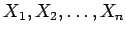
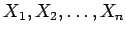
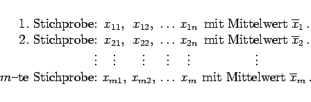
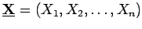

Inhalt Index DeskTop Bronstein

 Wahrscheinlichkeitsrechnung und Mathematische Statistik Mathematische Statistik Stichprobenfunktionen
Wahrscheinlichkeitsrechnung und Mathematische Statistik Mathematische Statistik Stichprobenfunktionen


So wie sich die konkreten Stichproben unterscheiden, sind auch die arithmetischen Mittel  von Stichprobe zu Stichprobe zufallsbedingt unterschiedlich. Sie können als Realisierungen einer neuen Zufallsgröße aufgefaßt werden, die mit
von Stichprobe zu Stichprobe zufallsbedingt unterschiedlich. Sie können als Realisierungen einer neuen Zufallsgröße aufgefaßt werden, die mit  bezeichnet wird und von den Stichprobenvariablen  abhängt.
bezeichnet wird und von den Stichprobenvariablen  abhängt.
|  | (16.123) |
Mit  wird die Realisierung der j-ten Stichprobenvariablen in der i-ten Stichprobe bezeichnet.
wird die Realisierung der j-ten Stichprobenvariablen in der i-ten Stichprobe bezeichnet.
Eine Funktion des Zufallsvektors  ist wieder eine Zufallsgröße und heißt Stichprobenfunktion. Die wichtigsten Stichprobenfunktionen sind Mittelwert, Streuung, Median und Spannweite.